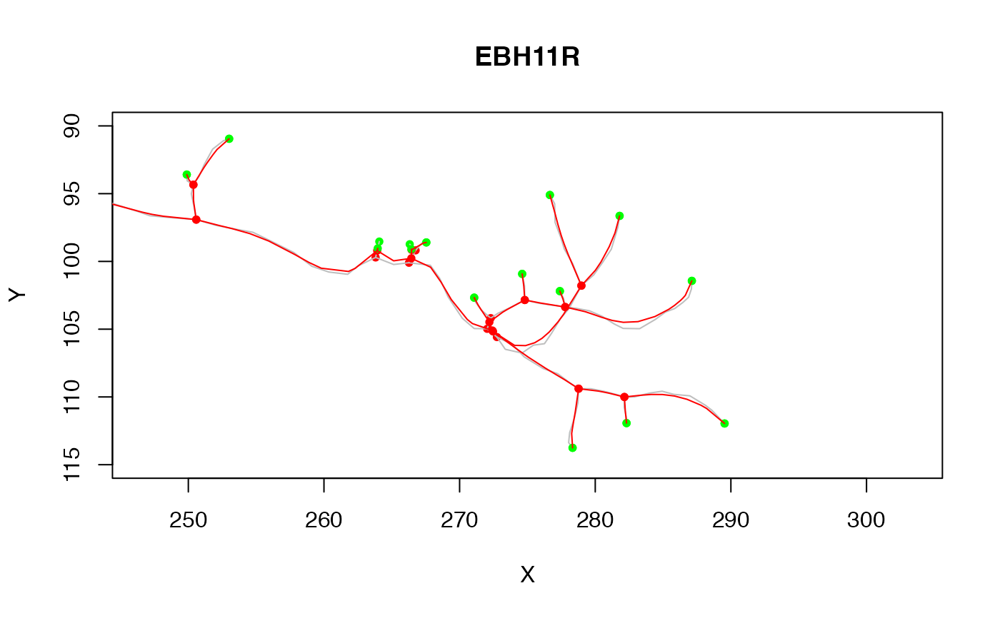

smooth_neuron smooths a neuron.
smooth_neuron(n, method = c("gauss", "spline"), ...) smooth_segment_gauss(xyz, sigma, ...)
| n | Neuron to smooth |
|---|---|
| method | Smoothing method |
| ... | Additional parameters passed to segment smoothing functions |
| xyz | A block of 3D coordinates defining an unbranched segment |
| sigma | The standard deviation of the Gaussian smoothing kernel (which has the same spatial units as the object being smoothed) |
A new neuron with smoothed 3d coordinates
ns=smooth_neuron(Cell07PNs[[1]], sigma=2) # plot in 2D zooming in on axon terminals plot(Cell07PNs[[1]], col='grey', xlim=c(260,290), ylim=c(115,90))plot(ns, col='red', add=TRUE)